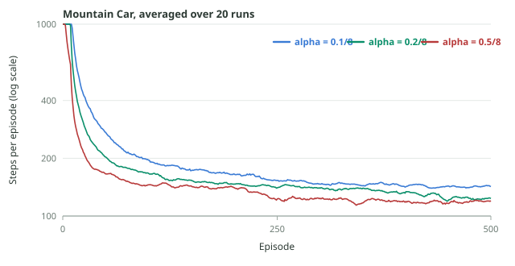

Episodic Sarsa on Mountain Car
The Mountain Car environment
An underpowered car sits in a valley. The goal is to drive it up the right-hand slope and reach the flag.
| Element | Definition |
|---|---|
| Task type | Episodic. An episode begins with the car near the bottom of the valley and ends when it reaches the flag. |
| State | Two continuous variables: car position and car velocity. |
| Actions | Three: accelerate right, accelerate left, coast (no acceleration). |
| Reward | $-1$ on every time step, including the final one. |
| Discounting | None: $\gamma=1$. |
The engine is weaker than gravity, so full throttle towards the flag simply stalls partway up the slope. The only way out is to oscillate: drive backwards up the left slope to build potential energy, then convert it into enough speed to clear the right slope.
Feature representation
Position and velocity are continuous, so we need features before Sarsa can do anything. The choice here uses everything from week 3:
- Tile the two inputs jointly. One tiling is an $8\times8$ grid over the two-dimensional position-velocity space, not two separate one-dimensional codings. Joint tiling lets the representation express interactions, which matters because "fast and near the flag" is very different from "slow and near the flag".
- Use 8 overlapping tilings, each offset slightly, so nearby states share most of their active tiles but are still distinguishable.
- Treat actions independently with the stacked representation from the previous post: three copies of the tile-coded state vector, only one of which is non-zero.
Exactly 8 entries of $\mathbf x(s,a)$ are ever equal to one: one tile per tiling, all inside the block of the chosen action. So an action-value lookup adds 8 numbers and an update writes 8 numbers, no matter how large the tile grid is. The step size is scaled accordingly, $\alpha=\alpha'/8$.
Zero weights are optimistic here
Initializing $\mathbf w=\mathbf 0$ looks neutral, but in this task it is aggressively optimistic:
Zero weights give $\hat q(s,a,\mathbf w)=0$ everywhere.
Every reward is $-1$ and every episode takes at least a few steps, so the true value of every state-action pair under any policy is strictly negative.
Every estimate is therefore too high. Whichever action the agent tries gets driven downward by its TD updates, which makes the untried actions look comparatively better and pulls the agent towards them.
That is optimistic initialization, and it produces extensive and systematic exploration rather than the random dithering of $\varepsilon$-greedy. It works well enough here that the agent can act purely greedily with no random exploration at all.
Reading the learned value function
We would like to plot $\hat q$ for every state, but there are uncountably many states, so we sample a grid of them and plot one number per state. The natural choice is the greedy value, negated:
Because rewards are $-1$ per step, this is the agent's own estimate of how many more steps it needs to reach the flag under its greedy policy. Three features of the surface are worth naming, and they all appear in the interactive figure above:
Near the flag, speed decides everything
At a high rightward velocity the car is a couple of steps from finishing, so the cost is tiny. At the same position with a leftward velocity it must first go all the way back and rebuild energy, so the cost is large. Position alone tells you almost nothing.
The peak sits at the start states
The most expensive region is the bottom of the valley at low speed, which is exactly where episodes begin. The agent has to complete a full energy-pumping swing from there.
After a very long training run the estimates stop improving: they are as good as this representation allows. They are still not exact, because a tile-coded linear function cannot represent the true surface perfectly. The residual error is the price of function approximation, not a failure of Sarsa.
Learning curves and the step size
The headline plot for this task is steps per episode, on a log scale, averaged over many independent runs. The curve below was produced by actually running the algorithm in this post: episodic semi-gradient Sarsa, 8 tilings of $8\times8$ tiles, stacked action features, greedy action selection, $\mathbf w=\mathbf 0$.

figures/gen_mountain_car.py, averaged over 20 runs and smoothed over a 10-episode window. The step size shown is $\alpha'$; the actual per-weight step is $\alpha=\alpha'/8$.Two things to read off it:
- Learning is fast at first and then flattens. The first episode wanders for hundreds or thousands of steps; within a few dozen episodes the agent is finishing in a small multiple of the optimal time. The flat tail is the representation's limit, not a bug.
- A larger step size learns faster here. $\alpha'=0.5/8$ sits below the other two for most of the run. That ordering is not universal; push $\alpha$ higher and the same curves become unstable, since each update overwrites more of what the previous one learned.
Mountain Car is the end-to-end demonstration: joint tile coding turns two continuous variables into sparse binary features, stacking turns them into action features, semi-gradient Sarsa learns the weights, and the reward structure makes zero-initialized weights do the exploring.
Check yourself
Practice
- Explain why full throttle towards the flag fails from the start state. dynamics
- Show that $\mathbf w=\mathbf 0$ is optimistic when every reward is $-1$, and say what would change if rewards were $0$ per step and $+1$ at the flag. reasoning
- Count the active features for one state-action pair with 8 tilings, and give the corresponding $\alpha$ for $\alpha'=0.4$. calculation
- Two states share a position but have opposite velocities. Explain why their cost-to-go values differ so much. interpretation
- Re-run
gen_mountain_car.pywith a step size large enough to destabilize learning and describe the curve. experiment